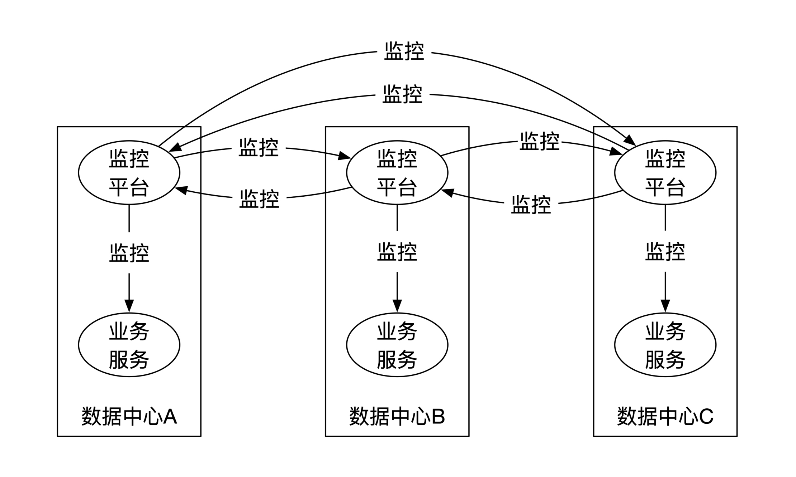
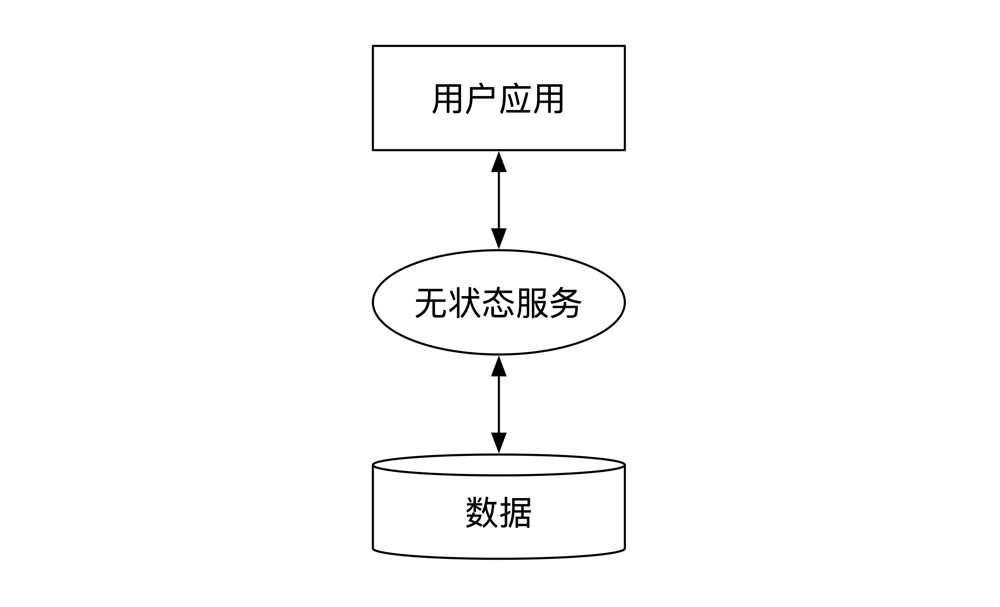
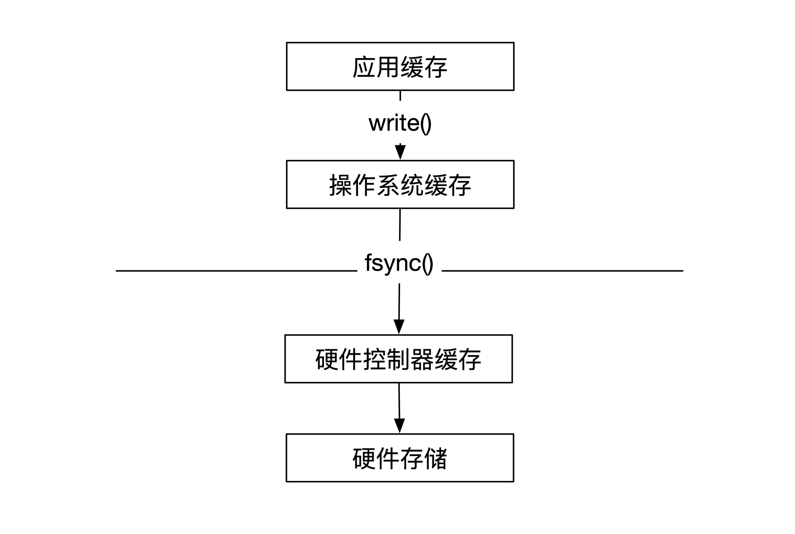
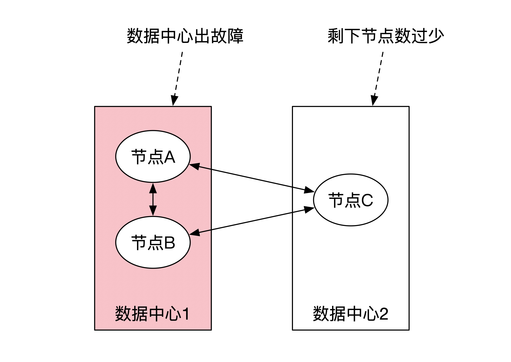
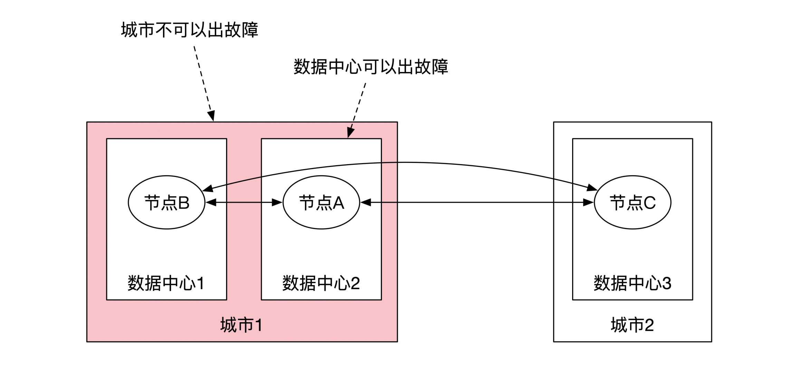
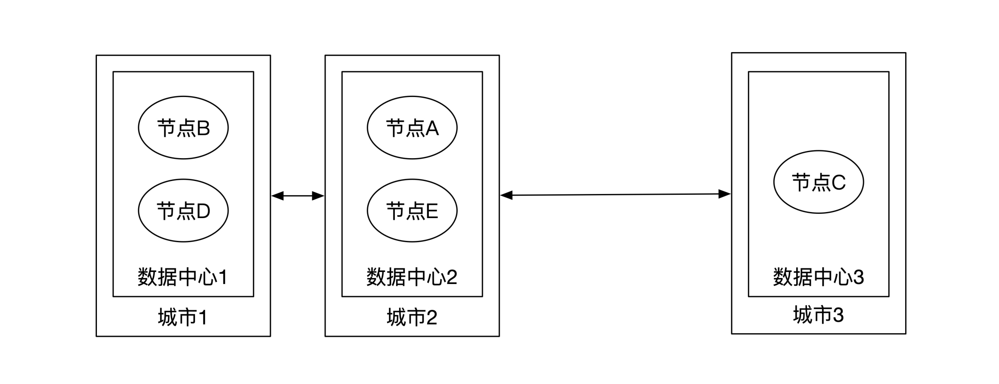
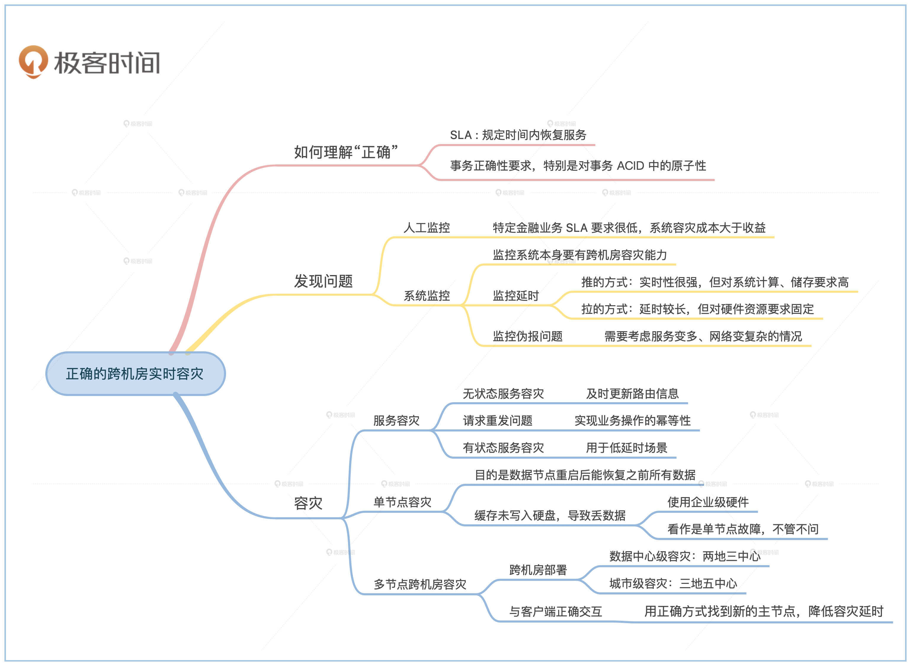
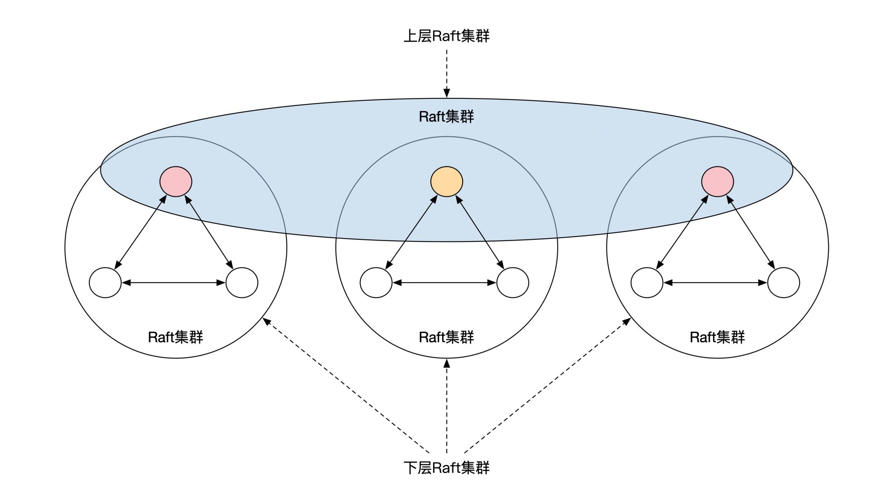

- 00 开篇词 如何成为金融级人才？.md.html
- 01 业务初探：扫了二维码之后发生了什么？.md.html
- 02 原理解读：如何理解第三方支付的业务逻辑和系统组件？.md.html
- 03 产品大观：不同金融业务都有哪些技术实现要点？.md.html
- 04 领域驱动设计（上）：如何设计金融软件顶层架构？.md.html
- 05 领域驱动设计（下）：如何设计统一的金融业务模型？.md.html
- 06 计算输入的正确性：怎么选择正确时间的数据？.md.html
- 07 计算过程的正确性：如何设计正确的数据处理架构？.md.html
- 08 计算结果的正确性：怎么保证计算结果是正确的？.md.html
- 09 数据传输的质量：金融业务对数据传输有什么要求？.md.html
- 10 数据存储的合理性：金融业务可以不用关系型数据库吗？.md.html
- 11 系统优化：如何让金融系统运行得更快？.md.html
- 12 正确性分级（上）：单机无备份有哪几种不同的一致性？.md.html
- 13 正确性分级（中）：多机无容灾有哪几种不同的一致性实现？.md.html
- 14 正确性分级（下）：多机有容灾有哪几种不同的一致性？.md.html
- 15 分布式正确性的存在性（上）：什么情况下不存在分布式共识算法？.md.html
- 16 分布式一致性（下）：怎么理解最简单的分布式一致性算法？.md.html
- 17 正确性案例（上）：如何实现分布式的事件溯源架构？.md.html
- 18 正确性案例（中）：常见分布式数据方案的设计原理是什么？.md.html
- 19 正确性案例（下）：如何在运行时进行数据系统的动态分库？.md.html
- 20 容灾（上）如何实现正确的跨机房实时容灾？.md.html
- 21 容灾（下）：如何通过混沌工程提高系统稳定性？.md.html
- 春节策划第1期 分布式金融系统知识，你掌握了多少？.md.html
- 春节策划第2期 读书如抽丝，为你推荐一些我读过的好书.md.html
- 春节策划第3期 如何运用架构知识解读春运买票和手游案例？.md.html
- 答疑集锦（一） 思考题解析与外汇架构知识拓展.md.html
- 答疑集锦（三） 思考题解析与数据库底层实现.md.html
- 答疑集锦（二） 思考题解析与账务系统优化.md.html
- 结束语 金融之道，与你同行，虽远尤欣.md.html
- 捐赠
20 容灾（上）如何实现正确的跨机房实时容灾？
20 容灾（上）如何实现正确的跨机房实时容灾？
你好，我是任杰。这一讲我和你聊一聊如何实现正确的跨机房实时容灾。
这一讲我们主要从这三个方面的内容给你讲解容灾问题，它们分别是正确容灾、跨机房容灾和实时容灾。
因为“跨机房”和“实时”是两个标准的技术问题，所以有非常明确的方式方法和衡量标准，我们会在后面详细讲解。
相反，“正确”这两个字可能会因人而异，不同环境下可能会有不同的理解。因此我们在讲解技术问题之前，先看看怎么理解“正确”这两个字。
正确的定义
金融行业覆盖的面非常广，不同子行业对容灾的要求会不一样。一种分类方式是按照用户专业性来分类，这种分法会将用户分为一般性用户和专业用户两大类。
一般性用户指的是非从事专业金融类工作的用户。专业用户指的是以金融类工作谋生的用户。注意这里的用户并不限定为个人用户，其中还包括企业等机构用户。通俗来讲一般性用户指的是C端用户，专业用户是B端用户。
对于一般用户来说，日常使用最多的金融服务是手机支付。如果手机支付系统出现了问题，支付公司进行了容灾处理之后，我们能接受的“正确”的容灾结果一般有两个。
第一个是尽量在规定时间内恢复服务，比如在10秒内恢复。第二个是如果有限时间内不能恢复服务，那么要避免出现金额对不上的问题。比如说，我这边已经显示扣款了，商家那边却迟迟收不到钱的情况，就一定要避免。
专业用户也有一般用户的需求，但是相比一般用户又多了一项。专业用户在和金融机构对接时会签署服务合同。在合同内会规定金融机构在无法履约时的赔偿条例。
比如说，对冲基金想通过证券公司的渠道抛售大量股票。如果此时证券公司系统崩溃，就会导致股票无法卖出。这个情况下，市场动荡带来的一部分经济损失可能需要由证券公司承担。
所以，我们综合两类用户需求的共性，可以这样来理解。从用户的角度来讲，正确容灾的第一个要求是服务质量协议（SLA，Service Level Agreement）的要求，规定一定时限内需要恢复服务。
另一个要求是事务正确性的要求，特别是对事务ACID四个属性中A的要求，即Atomicity，原子性。因为金融系统一旦出现金额问题后要给客户赔偿。
那这两个要求之间是什么关系呢？如果金融机构无法满足服务质量协议，那么赔偿金额就会按照合同规定的金额来计算，风险可控。但是如果事务正确性出了问题，比如百亿债券过户到一半系统崩溃，或者员工工资重复打款，金融机构面临的是不可控的风险。
这两个正确容灾要求的解决是需要成本的。如果实现容灾的成本大于赔偿金额，那么可以用日常营业利润的一部分作为容灾赔付基金。所以这里的正确并不是绝对的正确，而是相对的正确。你需要在服务质量、事务正确性和成本这三者之间做权衡。
发现问题
人工监控
在解决容灾问题前，我们先要发现系统已经出了问题。
虽然在互联网领域，现在的监控已经走向了自动化、甚至智能化，金融系统依然存在人工监控的情况。一个原因是一些特定金融业务的SLA要求很低，比如几天或者几个月，这时实现系统容灾成本大于收益。
比如我们去实现资产证券化的业务，可能整个计算过程就在业务人员办公电脑的Excel里。如果电脑出问题了，重启一下就行，如果重启不了就换一位同事的电脑，而且这个过程可能一个月才做一次。一般来说，适合人工监控的一般是业务量小、客户少、金额高的金融业务。
系统监控
让我们回到一般情况下的跨机房容灾监控问题。因为监控系统本身是一个很大的命题，在很多地方都有详细的介绍，所以在这里不做过多阐述。
我重点给你讲讲，在解决跨机房容灾监控问题的时候，监控系统方面你需要注意的地方，主要有三点。
第一点是监控系统本身需要有跨机房容灾的能力。一种方式是用业务系统的跨机房容灾的架构来实现监控系统。虽然也可以解决问题，但是成本较高。
这是因为监控数据是可以部分丢失的。我们在第9节课提到过数据具有时效性。监控数据和市场数据一样，时间越久，数据的价值越低。所以如果丢失了几秒钟的监控数据，你只要稍微等一下，刷新一下页面可能就会拿到最新数据。
这样看来，我们就不需要为了数据中心级灾难这种小概率事件，采用高成本的容灾方案。
因此，一个性价比较高的方案是监控数据本地异步备份，不同数据中心的监控平台彼此之间互相监控。如下图所示：

第二点是监控的延时。监控系统有推和拉两种获取监控数据的方式。推指的是业务系统主动将监控指标数据推送给监控系统，比如常见的心跳数据（heartbeat）。这么做实时性很强，但是对监控系统的峰值计算和存储能力要求很高。
因此一般采用另一种折中的方式，让监控系统定期从业务系统里拉取监控指标。这样对硬件资源的要求基本固定，但是监控延时会稍微长一些，此时你需要和业务方仔细沟通金融业务需要的SLA。
第三点是监控会伪报。当服务变多、网络变复杂之后，所有可能出现的异常都会出现。
比如在防火墙配置出错的情况下，可能明明监控系统已经发现某服务不可用，但是该服务却在依然正确运行，想退出该服务的时候，退出指令也无法发送成功。因此，容灾处理需要考虑到在伪报情况下的正确性。
容灾过程
在基于服务的架构下（SOA，Service Oriented Architecture），系统一般分为3层：用户应用层，无状态服务层和数据层，如下图所示。
- 因此在出现数据中心级别灾难的情况下，我们需要处理服务的容灾和数据的容灾。接下来，我们先看看服务容灾。
服务容灾
无状态服务容灾
无状态服务的容灾相对简单，基本上什么都不做就可以了。一般来说，服务调度算法会将服务请求随机调度到不同的数据中心，因此当一个数据中心出现问题的情况下，用户服务在多次尝试之后，就会被调度到没有出现问题的数据中心。
更进一步的优化方法是节省掉重复尝试的时间。如果数据中心内的服务均不可用，可以更新服务路由信息。这样新的请求不会被发送至出问题的数据中心节点，等到该数据中心恢复之后再加回到路由信息内。
消息重发问题
在容灾的过程中，无状态服务需要处理消息重发问题。如果表面上消失掉的无状态服务，其实依然还在处理服务，那我们该怎么办呢？一个常见的情况是服务成功处理了请求，但是由于防火墙问题无法将成功状态返回给用户。
我们在第8节课一起研究过，怎么解决请求重发的问题。解决重发问题要求我们实现业务操作的幂等性（Idempotency），比如利用消息内的唯一标识符，或者使用K/V这种具有天然幂等性能力的数据结构。
有状态服务容灾
金融行业的低延时场景通常会采用有状态的服务，比如外汇交易所或者股票交易所。这时候可以将有状态服务节点当作数据节点来处理。
数据容灾
数据容灾一般需要数据系统自己来处理，容灾作为数据系统的一种自有的能力。这里我们重点看看金融系统常见的两个方案，分别是两地三中心和三地五中心的实时容灾方案。
单节点容灾
为了满足金融级的容灾要求，我们需要先保证单机节点具有一定的容灾能力。
单机节点容灾指的是，数据节点重启后能恢复之前所有数据。在这里有一些细节需要你注意。通常在写入数据文件时，数据并没有被写入到硬盘中，此时数据会保存在操作系统内的缓存。
当这个缓存满了，或者等待了一定时间之后（比如30秒钟），操作系统会将这个缓存写入到硬件控制器的缓存。用户也可以通过fsync的系统调用来主动完成这个过程，但是需要小心的是此时只写入到了硬件控制器缓存，并没有写到了硬盘。如果这时候机器断电，依然有可能出现数据丢失。

那么怎么处理这种小概率事件呢？也有两种方式。一种方式是用企业级硬件。企业级硬盘可能会携带一小块电池。当机器断电之后，这块电池能保证硬件控制器内的数据都能写入到硬盘中，这是用钱来换正确性。
另一种方式是不管不问。如果我们已经确定了，一定会用一组集群来实现多节点容灾，这种情况下，因为断电而产生的数据丢失可以看作是单节点故障来处理。这也是用钱来换正确性的思路，Kafka就是用了这种假设，甚至Kafka连fsync都节省掉了。
所以单节点容灾到什么程度取决于你有多少钱。
多节点跨机房容灾
跨机房部署
两地三中心或者三地五中心的容灾利用了共识（consensus）算法的能力。我们在第16节课详细讲过Raft共识算法，如果你记不清了，可以做个回顾。
Raft的部署一般有3个备份或者5个备份两种选项。偶尔也会出现9个备份的选择，比如Google。
我们先来看看有3个备份的情况。这时候有两种选择。一种选择是一个数据中心有2个节点，另一个数据中心只有1个节点。这样只能保证单节点级别的容灾，不能保证数据中心级的容灾。
比如下面这幅图展示了一个典型的部署。Raft算法要求有一大半的机器在线才能正常工作，因此3个备份的情况下至少需要2台节点在线。如果下图的数据中心1整个出了故障，那么只剩下一个节点在数据中心2，算法无法正常工作。

3个备份的另一种选择是将3个节点放在3个数据中心内。这时可以将两个数据中心放在一个城市，另一个数据中心放在另一个城市，这个做法也叫两地三中心。这样能满足单个数据中心级的容灾，但是不能满足城市级容灾。
比如下图所示。如果城市1因为道路施工挖断了光纤，城市2就不能保证Raft协议正常工作。
- 5备份的情况和3备份的情况类似，但是选择更多。其中有一些选择能达到城市级别的容灾。
我们举个例子来理解。如下图所示，这时候5个节点基本平分到了3个城市的数据中心。你可以算一算，这时候任何一个城市网络出现了问题，Raft协议都能正常运行。这就是常见的三地五中心部署，也是普遍使用的较高容灾级别的部署方式。

总结一下。在使用多个节点容灾的情况下，两地三中心只能达到数据中心级别的容灾。如果需要达到城市级别的容灾，需要三地五中心部署。
客户端处理
我们在进行容灾分析的时候，一般会侧重处理服务器端的各种特殊情况，这时候很容易忽略客户端。
从原理上来说，如果服务器端容灾做得正确，就不会出现数据正确性的问题。但是我们在开头提到过，容灾除了正确性之外，还有一个服务质量协议的问题，我们还需要尽量减少无法提供服务的时间长度。
因此，我还是要强调一下正确的客户端行为（我们在第16节课说过）。当服务器出现问题的时候，Raft协议自动换主之后，客户端一定要用正确的方式来找到新的主节点，这样会大大减少容灾的延时。
小结
这节课我们学习了如何实现正确的跨机房实时容灾。
首先，我们了解了正确性的定义。正确性分为服务质量协议（SLA）和事务正确性这两个方面。这两者的解决需要付出成本。我们很难达到绝对的正确，因此需要在成本和正确性之间做一个权衡。
接下来，我们讲了怎么发现问题。如果金融业务的业务量小、客户少，而且金额高，那么可以选择人工监控。一般情况下应该选择用监控系统来监控集群状态。这些监控系统之间需要彼此监控，尽量采用拉取的方式来获取监控数据。
最后，我们分析了发现问题之后如何容灾。无状态服务容灾比较简单，只需要解决下游数据节点的重发问题。有状态服务的容灾和数据节点容灾一样，是最复杂的情况。
数据节点容灾先要提高单节点容灾的能力，可以通过使用更好的硬件和正确的方法来提高。多节点跨宿主中心容灾需要考虑对容灾的需求。数据中心级别的容灾可以采用两地三中心，城市级别的容灾可以考虑三地五中心。

思考题
除了三地五中心之外，还有一种容灾能力更高的部署方式，那就是三地九中心，Google曾经采用过这种部署方式。
三地九中心并不是直接部署9个Raft节点，而是将Raft节点分为了两层。下面一层按照3个一组分为了3组，分别放在3个数据中心。每个数据中心的3个节点刚好组成一个Raft集群，通过Raft选主的方式选出来一个主节点。
这样3个数据中心就一共有3个主节点。这3个主节点之间刚好也可以形成一个Raft集群，再选出一个级别更高的Raft主节点。这个唯一的主节点负责代表集群对外提供服务。下面这幅图展示了三地九中心的部署方式。

那么，你觉得这个三地九中心部署方案有哪些优点呢？
欢迎留言和我分享你的想法。如果学了这一讲你有所收获，也欢迎你把这篇文章分享给你的朋友，一起交流和讨论跨机房实时容灾的问题。
© 2019 - 2023 Liangliang Lee. Powered by gin and hexo-theme-book.